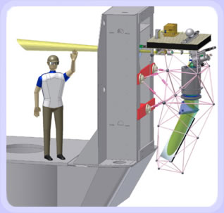
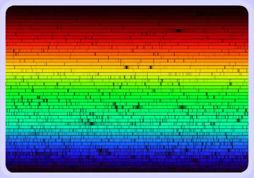

The Spectrograph

The figure shows the new echelle spectrometer at the Nasmyth platform next to the fork of the alt-az mount of the telescope. The spectrometer is stabilized and optimized for high Doppler precision, 1 m/s. Construction is underway at the UCO/Lick optical shops, located on the campus of UC Santa Cruz. Completion is due by Fall 2005, timed with first light of the telescope.
This spectrometer is optimized for speed and radial velocity precision. It uses a fully dioptric f/3 collimator/camera lens system feeding an R-4 echelle in near-littrow configuration. The collimated beam size is quite large (8") for a telescope of this size, resulting in a very generous throughput (resolution * slit width product) of 110,000 arcsecs. Thus, even in moderate-quality seeing at a typical spectral resolution of 80,000, light loss at the slit will be minimal. Cross dispersion is accomplished by a prism in double-pass, and the echelle/cross disperser combination delivers a spectral format covering 0.37 to 0.9 um onto the E2V CCD. The optical train has been passively athermalized in the design to eliminate the need to ever re-focus. All the optics are carried within a determinate space-frame of Invar rods.

The spectrometer itself is expected to achieve 35% efficiency (including the 10% typical light lost to seeing at the slit, and the QE of the CCD). Combined with the telescope, the total overall system efficiency is expected to reach 24%. The product of telescope primary mirror area times total system efficiency for the Automated Planet Finder will actually exceed that of the 3.0m Shane telescope and Hamilton spectrometer by about 45%, while also delivering about 60% higher resolution. Furthermore, it will be available for, and devoted exclusively to, Doppler observations toward planet detection, 365 nights of the year. We will use 15% of the telescope time directly on SIM targets and astrometric references stars to weed out binaries in advance of launch.

{kind=link}